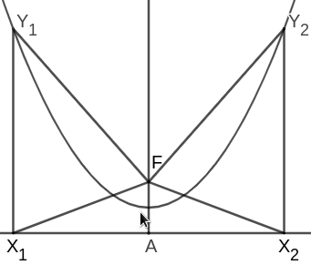

Newton’s original argument is as follows:
Newton’s original argument is as follows: September 2022
The prependicular, let fall from the focus of a parabola on its tangent, is a mean porportional between the distances of the focus from the point of contact, and from the principal vertex of the figure.
Newton’s original argument is as follows:
For, let $AP$ be the parabola, $S$ its focus, $A$ its principal vertex, $P$ the point of contact, $PO$ an ordinate to the principal diameter, $PM$ the tangent meeting the principal diameter in $M$, and $SN$ the perpendicular from the focus on the tangent. Join $AN$, and because of the equal lines $MS$ and $SP$, $MN$ and $NP$, $MA$ and $AO$, the right lines $AN$, $OP$ will be parallel; and thence the triangle $SAN$ will be right-angled at $A$, and similar to the equal triangles $SNM$, $SNP$; therefore $PS$ is to $SN$ as $SN$ is to $SA$.
Though this might seem to be complete, upon further inspection it is clear that Newton has left quite a lot of work for us to do; as this argument relies on the equality of $MS$ and $SP$, $MN$ and $NP$, as well as the equality of $MA$ and $AO$. So if we wish to complete Newton’s argument, we need to prove these identities. And so we need to prove the following propositions.
Given that the tangent of a parabola intersects its axis of symmetry at $M$, then the distance between $M$ and the focus is equal to the distance between the focus and the point of tangency.
Given that the tangent of a parabola intersects its axis of symmetry at $M$, then the perpendicular dropped from the focus onto the tangent is equidistant from $M$ and the point of tangency.
Given that the tangent of a parabola intersects its axis of symmetry at $M$, then the distance between $M$ and the vertex is equal to the distance between the vertex and the perpendicular dropped from the point of tangency.
But before we get into this, let me give an introduction to dealing with parabolas geometrically for those who might not be familiar with such things.
Most people know parabolas as curves traced by the functions of the form $f(x) = a[k(x-p)]^2 + q$ where $(p, q)$ is the vertex of the parabola. Though this representation of a parabola is very useful in a large variety of problems—notably those in classical mechanics—it is not a useful tool for our current problem. The equations get too unwieldy too quickly. Fortunately, one may also study parabolas from a geometric/synthetic perspective which is better suited to this task.
Given a line $d$ and a point $F$, a parabola is defined as the shape such that all points on the parabola are equidistant from $d$ and $F$. By convention we call the $d$ the directrix and $F$ the focus.
From this definition it is clear that the vertex of the parabola is the midpoint of the line connecting the focus and the directrix. If it is not clear, then you can prove it yourself by using the fact that the vertex is the point on the parabola which is closest to the directrix.
It might not be totally clear how this is related to the algebraic definition. But I’ll convince you that these two definitions have all the same properties as each other. For instance, we know that a parabola $f$ with its vertex at $(0,0)$ is even; that is $f(-x) = f(x)$. The analogous property is stated geometrically as:
In any parabola, the line passing through the vertex and the focus is the axis of symmetry. Meaning that if two points are equidistant from the line passing through the focus and the vertex, then they are equidistant from the directrix.
Trace a parabola with focus $F$ and a directrix through $A$ such that $AF$ is perpendicular to the directrix. Pick any point $X_1$ on the directrix and reflect it over $A$ at $X_2$ and connect both to the focus. Notice that, since  $X_1F = X_2F$, then $\angle FX_1A = \angle FX_2A$. And as $\angle Y_1X_1A$ and $\angle Y_2X_2A$ are right angles, then $\angle Y_1X_1F$ and $\angle Y_2X_2F$ are both equal to $90^\circ - \angle FX_1A$. We now use the defining property of the parabola by observing that $\triangle X_1Y_1F$ and $\triangle X_2Y_2F$ are both isosceles. And since two of their angles and two of their sides, namely $Y_1X_1F$ and $\angle Y_2X_2F$ and $X_1F$ and $X_2F$ are equal, then $\triangle X_1Y_1F \cong \triangle X_2Y_2F$. Therefore it is clear that $Y_1X_1 = Y_2X_2$. Q.E.D.
Now you might rightfully protest and say that this isn’t enough. “There are many things other than parabolas which are symmetric”, I hear you say. So now we’ll try to convert this shape onto the Cartesian coordinate system to see whether these two definitions really are equivalent.
Let the vertex of the parabola be placed at the origin and let the line $y=-1$ be the directrix. The function that traces this parabola is $y = ax^2$ for some $a$.
Since we determined that the vertex is the midpoint of the line connecting the focus with the axis of symmetry, then it should be clear that in our present construction the focus is $F = (0,1)$. Let $P = (x,y)$ be on the parabola. Then from our definition we know that $y + 1 = PF$ which is equal to $\sqrt{|x|^2 + |y-1|^2}$. So we obtain the equation $$ y + 1 = \sqrt{|x|^2 + |y-1|^2} $$ Which we intend to solve for $y$. So square both sides $$ y^2 + 2y + 1 = x^2 + y^2 - 2y + 1 $$ And by isolating for $y$ we obtain: $ y = \frac{1}{4}x^2 $. Q.E.D.
By this point you should truly be convinced of the equality of these two defintions. And if not, then feel free to try Newton’s lemma by using algebraic methods. Now I’ll provide a sample problem to increase the reader’s familiarity with using these techniques.
Suppose that on a parabola with vertex $V$ and a focus $F$ there exists a point $A$ such that $AF = 20$ and $AV = 21$. What is the sum of all possible values of the length $FV$. (From the AMC 12)
Show solution

Previously I’d stated three goals that have to be achieved for this proof to be complete. Those being:
Now we’ll go through these goals step by step and try to achieve them. À la means-ends analysis and GPS.
Given that the tangent of a parabola intersects its axis of symmetry at $M$, then the distance between $M$ and the focus is equal to the distance between the focus and the point of tangency.
Let $d$ be the directrix of our parabola $S$ be the focus, and $P$, be the
point of tangency. As such, $SP = PI$ where $PI$ is perpendicular to the
directrix. At this point we might as well connect $I$ to the intersection of
the tangent and the axis of symmetry,
 $M$. Our resulting picture strongly suggests that $PSMI$ is a rhombus. This can
be verified by noticing that, since $MS$ and $PI$ are parallel, then
$\angle PMS = \angle IPM$, $\angle IMP = \angle MPS$, $\angle MIS = \angle ISP$,
$\angle PIS = \angle ISM$. As such $\angle PIM = \angle PSM$. Therefore, the
triangles $\triangle IPM$ and $\triangle PSM$ are congruent, as the side $MP$
is shared by the two of them. As we have shown that $IP = MS$, then it follows
that $MS = SP$. Since the diagonals of a parallelogram bisect eachother, it is
easy to see that $MN = NP$. Q.E.D.
$M$. Our resulting picture strongly suggests that $PSMI$ is a rhombus. This can
be verified by noticing that, since $MS$ and $PI$ are parallel, then
$\angle PMS = \angle IPM$, $\angle IMP = \angle MPS$, $\angle MIS = \angle ISP$,
$\angle PIS = \angle ISM$. As such $\angle PIM = \angle PSM$. Therefore, the
triangles $\triangle IPM$ and $\triangle PSM$ are congruent, as the side $MP$
is shared by the two of them. As we have shown that $IP = MS$, then it follows
that $MS = SP$. Since the diagonals of a parallelogram bisect eachother, it is
easy to see that $MN = NP$. Q.E.D.
Well this wasn’t too bad. We’ve already achieved two of our three goals:
All we need to do now is to achieve the final goal and we’ll be done.
Given that the tangent of a parabola intersects its axis of symmetry at $M$, then the distance between $M$ and the vertex is equal to the distance between the vertex and the perpendicular dropped from the point of tangency.
Drop a perpendicular from $P$ to $O$ and connect the diagonals of $NPOS$.
Notice that since $\angle PNS$ and $\angle POS$ are both right angles, then
 $NPOS$ is a cyclic quadrilateral. As such, $\angle SON = \angle NPS$
which is in turn equal to $\angle NSM$.[1] It should be clear now that $MN = NO$.
$NPOS$ is a cyclic quadrilateral. As such, $\angle SON = \angle NPS$
which is in turn equal to $\angle NSM$.[1] It should be clear now that $MN = NO$.
By this point the clear next step is to show that $\triangle MNA \cong \triangle NOA$. However, this is only possible if the perpendicular from $N$ intersects the axis of symmetry at $A$—the vertex. However, we don’t know if this is true yet. Well whatever. We’ll just assume it for now. As such, $\triangle MAN \cong \triangle NOA$ and so $MA = AO$. Q.E.D.
Well that’s no good. We’ve technically ticked off goal three, but we’ve added another goal in its stead!
Well we have nothing better to do so might as well try to finish the last goal.
The perpendicular dropped from $N$ meets the axis of symmetry at the vertex.
First and foremost, drop a perpendicular from $N$ to the axis of symmetry and
call it $A$. Draw, through $S$, a perpendicular to the axis and mark its
 intersection with $ON$ as $E$. From $E$ drop a perpendicular onto the directrix
at $F$. Notice that since $EF$ is parallel to $MO$, then $\triangle EFN$ is
similar to $\triangle MNO$. As such we know that it is also isosceles. And since
$FE$ is perpendicular to $NA$, then $NA$ bisects $FE$, and since $FE = CS$,
then $NA$ also bisects $CS$. Meaning that $A$ is the midpoint of the focus and
the intersection of the axis of symmetry and the directrix; making it the
vertex.
intersection with $ON$ as $E$. From $E$ drop a perpendicular onto the directrix
at $F$. Notice that since $EF$ is parallel to $MO$, then $\triangle EFN$ is
similar to $\triangle MNO$. As such we know that it is also isosceles. And since
$FE$ is perpendicular to $NA$, then $NA$ bisects $FE$, and since $FE = CS$,
then $NA$ also bisects $CS$. Meaning that $A$ is the midpoint of the focus and
the intersection of the axis of symmetry and the directrix; making it the
vertex.
Now we can finally tick off the last goal.
And we’re done! Having showed all 4 goals, we can now restate Newton’s argument knowing that the proof is complete.
The prependicular, let fall from the focus of a parabola on its tangent, is a mean porportional between the distances of the focus from the point of contact, and from the principal vertex of the figure.
Since $MS = SP$,
$MN = NP$, and $MA = AO$, then $\triangle MNS$ is congruent to $\triangle SNP$.
The triangle $\triangle NAS$, by virtue of sharing $\angle NSA$ with
$\triangle MNS$ and having a right angle at $\angle NAS$ is similar to
$\triangle MNS$ and $\triangle SNP$. Therefore $PS$ is to $SN$, as $SN$ is to
$NA$. This completes our proof of lemma XIV of Newton’s Principia. Q.E.D.
Notes
In cyclic quadrilaterals, the angle between any side and a diagonal is equal to the angle between the opposite side and diagonal.